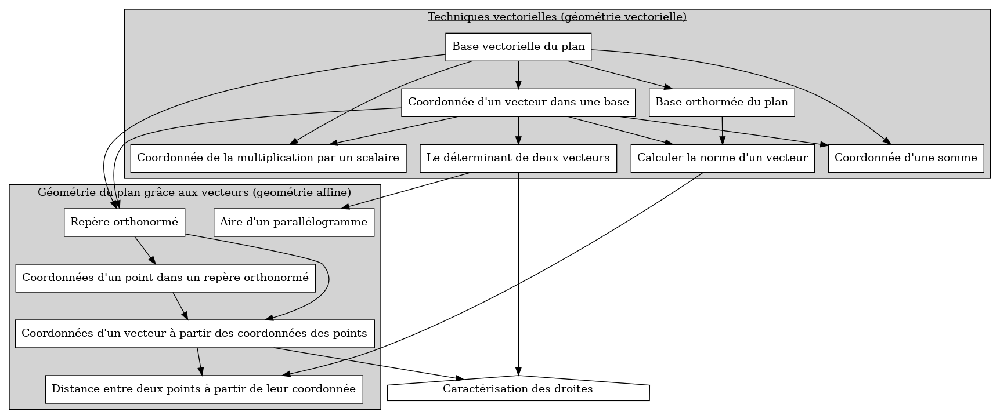
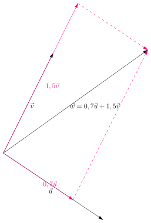
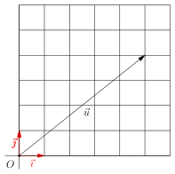
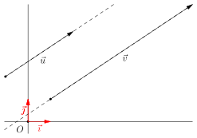
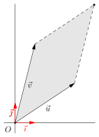

Méta vecteurs (deuxième partie)
1. Progression du cours des vecteurs (deuxième partie)

2. Cours : vecteurs dans un repère
2.1. Vecteurs dans un repère
2.1.1. Base, et base orthonormé
Soit \(\vec{u}\) et \(\vec{v}\) deux vecteurs non colinéaires non nuls. Alors \(\vec{u}\) et \(\vec{v}\) forment une base vectorielle du plan.
Soit une base vectorielle \((\vec{u}, \vec{v})\). On dit qu'un vecteur \(\vec{w}\) se décompose dans cette base s'il existe deux nombres \(a\) et \(b\) tels que : \[ \vec{w} = a \vec{u} + b \vec{v} \]

Figure 1 : Un exemple de base donné par \((\vec{u}, \vec{v})\). On a décomposé le vecteur \(\vec{w}\).
Tout vecteur \(\vec{w}\) peut se décomposer de manière unique dans une base \((\vec{u}, \vec{v})\) donnée.
On appelle coordonnée du vecteur \(\vec{w}\) dans la base \((\vec{u}, \vec{v})\) les nombres \(a\) et \(b\) tels que \(\vec{w} = a\vec{u} + b\vec{v}\) et on écrira \(\vec{w} = (a; b)\), ou bien \(\vec{w}=\left(\begin{array}{c} a \\ b \end{array}\right)\)
Dans la situation précédente, on a \(\vec{w} = (0,7; 1,5)\) dans la base \((\vec{u}, \vec{v})\)
Une base orthonormée \((\vec{i}, \vec{j})\) est une base telle que :
- La norme de \(\vec{i}\) et \(\vec{j}\) vaut \(1\).
- Les directions de \(\vec{i}\) et \(\vec{j}\) sont perpendiculaires.
Comment se décompose \(\vec{u}\) dans la base \((\vec{i}, \vec{j})\) ?

2.1.2. Coordonnées d'un vecteur dans une base
Si on a : \[ \vec{u} = x \vec{i} + y \vec{j} \quad x,y \in \mathbb{R} \] Alors, on dira que les coordonnées du vecteurs \(\vec{u}\) dans la base \((\vec{i}, \vec{j})\), sont \(\vec{u} = \left(\begin{array}{c} x \\ y \end{array}\right)\).
Deux vecteurs qui admettent les même coordonnées dans une base sont égaux.
Les coordonnées du vecteur somme de deux vecteurs est donné par la somme des coordonnées.
Le produit par un scalaire multiplie chacune des coordonnées par ce scalaire.
Dans une base orthonormée, la norme d'un vecteur \(\vec{u} = a \vec{i} + b \vec{j}\) est donnée par : \[ \vec{u} = \sqrt{a^2 + b^2} \]
2.1.3. Repère orthonormé
On appelle repère orthonormé la donnée d'un point \(O\) que l'on appelle l'origine et d'une base orthonormée \((\vec{i};\vec{j})\).
Pour tout \(x, y\) des nombres réels, nous avons : \[ M = (x; y) \iff \overrightarrow{OM} = \left( \begin{array}{c} x \\ y \end{array} \right) \]
Soit \(A = (x_A; y_A)\) et \(B =(x_B;y_B)\) deux points dans un repère orthonormé. Les coordonnées de \(\overrightarrow{AB}\) sont données par : \[ \overrightarrow{AB} = \left(\begin{array}{c} x_B - x_A \\ y_B - y_A \end{array}\right) \]
Trois points \(A\), \(B\) et \(C\) non confondus sont alignés si et seulement si deux vecteurs formés par deux points différents parmi \(A\), \(B\) et \(C\) sont colinéaires.
:EXPORTFILENAME: coursvecteursrepere.pdf
2.2. Déterminant
2.2.1. Définition du déterminant de deux vecteurs
Dans ce cours, on considère toujours un repère orthonormé \((O; \vec{i};\vec{j})\).
Soit \(\vec{u} = \left(\begin{array}{c} a \\ b \end{array}\right)\) \(\vec{v} = \left(\begin{array}{c} c \\ d \end{array}\right)\) deux vecteurs et leurs coordonnées. Alors, on définit le déterminant de ces deux vecteurs par : \[ \boxed{\textrm{det}(\vec{u};\vec{v}) = ad - bc} \]
2.2.2. Utilisation du déterminant
- Pour savoir si deux vecteurs sont colinéaires
Deux vecteurs sont colinéaires si et seulement si leur déterminant est nul.

Figure 2 : Que peut-on dire du déterminant des vecteurs \(\vec{u}\) et \(\vec{v}\) ?
- Pour calculer l'aire d'un parallélogramme
Le déterminant de deux vecteurs correspond, au signe près, à l'aire du parallélogramme engendré par ces deux vecteurs.

Figure 3 : Parallélogramme engendré par les vecteurs \(\vec{u}\) et \(\vec{v}\)
Si on considère les vecteurs \(\vec{u}\) et \(\vec{v}\) dont les coordonnées sont : \[ \vec{u} = \left(\begin{array}{c} 3\\4 \end{array}\right) \quad \vec{v} =\left(\begin{array}{c} 1 \\ 2 \end{array}\right) \] Alors on peut en déduire que l'aire du parallélogramme engendré est :
3. Exercices
3.1. Lire des coordonnées de vecteurs
import graph;
import geometry;
defaultpen(fontsize(13pt));
unitsize(0.7cm);
//show(defaultcoordsys);
string coordonne(real x,real y, string vecteur) {
string signey = "+";
if (y < 0) { signey = "";}
return "$\vec{" + vecteur+ "}= " + string(x) +" \vec{u}" + signey + string(y) + "\vec{v}$";
}
int indiceLabel = 0;
pair u = (-1, 1), v = (2, 1);
draw(origin--u, L=Label("$\vec{u}$", Relative(0.5), S), Arrow(TeXHead), p=2bp+darkred);
draw(origin--v, L=Label("$\vec{v}$", Relative(0.5), S), Arrow(TeXHead), p=2bp+darkgreen);
string[] placerVecteur (real[] a,real[] b, pair ptOrigin = origin) //retourne la correction
{
string[] labelvecteur = array("abcdefghijklmnopqrstwxyz"); //pas du u ni v
string[] corrige;
int n = a.length;
int m = b.length;
for (int i = 0; i <n ; ++i) {
// for (int j = 0; j <m ; ++j) {
draw(ptOrigin--shift(ptOrigin)*(a[i]*u+b[i]*v), L=Label("$\vec{"+labelvecteur[indiceLabel] +"}$", Relative(0.7)), Arrow());
corrige.push(coordonne(a[i], b[i], labelvecteur[indiceLabel]));
indiceLabel+=1;
// }
}
return corrige;
}
void afficherCorrection ( string[] correction, pair pos =(5, 0)) {
string cort;
for (string cor : correction){
cort+= cor + '\n\n';
}
label(minipage(cort, 100), pos);
}
int bordureReseau = 9;
int xmin = -bordureReseau, xmax = bordureReseau;
int ymin = -bordureReseau, ymax = bordureReseau;
real kmin = 0.5, kmax = 1, kinc = 0.5;
//création du réseau en fonction de u et v
pair[] reseau ;
for (real kx = kmin; kx <= kmax; kx = kx + kinc) {
for (real ky = kmin; ky <= kmax; ky = ky + kinc) {
for (int x = xmin; x <= xmax; ++x) {
for (int y = ymin; y<= ymax; ++y) {
reseau.push((kx + x)*u+(ky+y)*v);
}
}
}
}
//afficher le réseau
dot(reseau, p=grey+2bp);
// les différents jeux de scalaire
real[] a = {-2, 1.5, 2, -1.5, 3.5}, b = {3, 4, -2, 0, 0.5};
real[] ap = {-2, -1}, autrep = {3, -1};
//real[] app = {-0.8, 0.8}, bpp = { 1, -1};
// différents jeux d'origines des vecteurs
pair[] origines={origin, 0.8*u+0.8*v, -u-0.8*v };
// appeler placerVecteur : 1) place les vecteurs, 2) donne la correction dans un tableau de string
//string[] correction1 = placerVecteur(a, b, 0), correction2= placerVecteur(ap, autrep, 0.8*u+0.8*v ), correction3= placerVecteur(app, bpp, -u-0.8*v );
string[] correction1 = placerVecteur(a, b, origin);
string[] correction2 = placerVecteur(ap, autrep, 5*u+v);
//afficherCorrection(correction2, 2);
//afficherCorrection(correction3, 3);
//dot(origines, purple);
//label(minipage("Donner la décompositon de chaque vecteur dans la base $(\vec{u}, \vec{v})$", 100), (8, 4));
real bord = 8;
path clippage = shift((0, 4))*(-bord, -bord)--shift((0, 4))*(bord, -bord)--(bord, bord)--(-bord, bord)--cycle;
clip(clippage);
afficherCorrection(correction1, (11, 0));
shipout(bbox(2mm, Fill(white)));